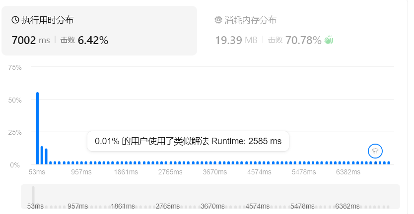

hot100
leetcode hot100
1. 两数之和
我们查找到后面时去看前面的是否符合要求
class Solution:
def twoSum(self, nums: List[int], target: int) -> List[int]:
mp = {} # 值 -> 下标
for i in range (len(nums)):
if target - nums[i] in mp:
return [mp[target - nums[i]], i]
mp[nums[i]] = i
49. 字母异位词分组
通过哈希表进行整理，异位词排序后必然相同，映射到一个元素中
class Solution:
def groupAnagrams(self, strs: List[str]) -> List[List[str]]:
map = defaultdict(list)
for s in strs:
key = ''.join(sorted(s))
map[key].append(s)
return list(map.values())
map = defaultdict(list)：这段意思是某个键第一次出现的时候，自动给一个空列表。
普通字典版本：
class Solution:
def groupAnagrams(self, strs: List[str]) -> List[List[str]]:
map = {}
for s in strs:
key = ''.join(sorted(s))
if key not in map:
map[key] = []
map[key].append(s)
return list(map.values())
128. 最长连续序列
哈希表
class Solution:
def longestConsecutive(self, nums: List[int]) -> int:
st = set(nums)
ans = 0
n = len(st)
for x in st:
if x-1 in st:
continue
y = x + 1
while y in st:
y += 1
ans = max(ans, y-x)
return ans
283. 移动零
双指针
class Solution:
def moveZeroes(self, nums: List[int]) -> None:
"""
Do not return anything, modify nums in-place instead.
"""
i0 = 0
for i in range(len(nums)):
if nums[i]:
nums[i], nums[i0] = nums[i0], nums[i]
i0 += 1
11. 盛最多水的容器
双指针
class Solution:
def maxArea(self, height: List[int]) -> int:
l = 0
r = len(height) - 1
ans = 0
while l <= r:
if height[l] <= height[r]:
reg = height[l] * (r-l)
l += 1
elif height[l] > height[r]:
reg = height[r] * (r-l)
r -= 1
ans = max(reg, ans)
return ans
15. 三数之和
双指针，不过本题优化比较多
class Solution:
def threeSum(self, nums: list[int]) -> list[list[int]]:
nums.sort()
n = len(nums)
ans = []
for i in range(n-2):
x = nums[i]
if i > 0 and x == nums[i - 1]:
continue
if x + nums[i+1] + nums[i+2] > 0:
break
if x + nums[-1] + nums[-2] < 0:
continue
j = i + 1
k = n - 1
while j < k:
s = x + nums[j] + nums[k]
if s > 0:
k -= 1
elif s < 0:
j += 1
else:
ans.append([x, nums[j], nums[k]])
j += 1
while j < k and nums[j] == nums[j - 1]:
j += 1
k -= 1
while k > j and nums[k] == nums[k + 1]:
k -= 1
return ans
42. 接雨水
依旧双指针，这里我们给左右指针都留下一个锚点一类的存在，用来辅助计算
class Solution:
def trap(self, height: List[int]) -> int:
ans = pre_max = suf_max = 0
l = 0
r = len(height) - 1
while l < r:
pre_max = max(pre_max, height[l])
suf_max = max(suf_max, height[r])
if pre_max < suf_max:
ans += pre_max - height[l]
l += 1
else:
ans += suf_max - height[r]
r -= 1
return ans
3. 无重复字符的最长子串
哈希表（不对顺序做要求）+双指针
class Solution:
def lengthOfLongestSubstring(self, s: str) -> int:
dic, res, i = {}, 0, -1
for j in range(len(s)):
if s[j] in dic:
i = max(dic[s[j]], i)
dic[s[j]] = j # 记录每个字符最近一次出现的位置
res = max(res, j - i)
return res
- 这里列表直接拿来当哈希表来用了，之前从来没想过
438. 找到字符串中所有字母异位词
最初思路，切片与排序
class Solution:
def findAnagrams(self, s: str, p: str) -> List[int]:
res = sorted(p)
np = len(p)
ans = []
for i in range(len(s) - np + 1):
reg = sorted(s[i:i+np])
if reg == res:
ans.append(i)
return ans

外层窗口个数为 len(s)，每次排序需要 O(np log np) 时间，这个时间复杂度还是很大的
滑动窗口+哈希
class Solution:
def findAnagrams(self, s: str, p: str) -> List[int]:
'''
哪些长度等于len(p)的子串，恰好由和p同一批字符组成
顺序并不重要，所以统计每个字符出现的数量就可以
滑动窗口+哈希表的话
左边出去一个，右边进来一个，维护一次哈希表，判断一次结果
'''
n = len(p)
cnt_p = Counter(p)
cnt_s = Counter()
ans = []
for right, c in enumerate(s): # 用于遍历时拿到元素下标和元素本身两个内容
cnt_s[c] += 1 # 右端点字母进入窗口
left = right - len(p) + 1
if left < 0:
continue
if cnt_s == cnt_p:
ans.append(left)
cnt_s[s[left]] -= 1 # 左端点字母离开窗口
return ans
Counter(str)：自动统计每个字符出现的次数enumerate(list)：遍历时返回两个内容：元素下标、元素本身
560. 和为 K 的子数组
# @leet start
class Solution:
def subarraySum(self, nums: List[int], k: int) -> int:
'''
如果直接暴力枚举的话，会造成很多的重复计算，nums[0-4]的和在nums[0-3]已经被计算过了
但是这里只增加了一个数，所以把区间和转为前缀和，或者说，两个前缀的差
pre[i]表示前i个元素的和：
- pre[0] = 0
- pre[1] = nums[0]
- pre[2] = nums[0] + nums[1]
下标l到r的子数组和就可以表示为pre[r+1]-pre[l]
本题要求的这个子数组和为[k]，所以条件就变为了pre[r+1]-pre[l]=k
即，pre[l] = pre[r+1]-k，换句话说，当前缀和已经确定的时候，前面有没有某个前缀和等于 “当前值-k”
接下来再优化，我们之前其实已经扫描过pre[l]了，在当前位置之前，pre[r+1]-k出现过多少次
某个数字与次数的映射，可以用哈希表来解决
- 键：某个前缀和的值
- 值：这个前缀和出现了多少次
'''
dic = defaultdict(int)
dic[0] = 1
s = 0
ans = 0
for x in nums:
s += x
#1.ans += max(s - dic[s],0)，这里不对，我应该找的是s-k的前缀和，也就是dic[s-k]
ans += max(dic[s-k], 0)
#1. 这里当前的前缀和没有记录到字典中
dic[s] += 1
return ans
# @leet end
239. 滑动窗口最大值
# @leet start
class Solution:
def maxSlidingWindow(self, nums: List[int], k: int) -> List[int]:
'''
窗口右移一次，左边的数会移出去，右边的数会移进来
我们维护一个结构，在删除一个旧元素、增加一个新元素后立刻得到最大值
我们可以维护一个优先队列
当新进来的元素大于队尾元素时，队尾这些元素必然不会成为最大值，直接删除就可以了
左边元素离开的时候，检查队头的下标是不是在窗口之外，如果出界了就删除掉
'''
q = deque() # 双端队列，支持两头操作
res = []
for i, x in enumerate(nums):
if q and q[0] <= i-k: #去掉过期元素
q.popleft()
while q and nums[q[-1]] < x: #去掉队尾更小元素
q.pop()
q.append(i)
if i >= k - 1: #记录答案
res.append(nums[q[0]])
return res
# @leet end
76. 最小覆盖子串
class Solution:
def minWindow(self, s: str, t: str) -> str:
'''
类似上一题的思路，我们只需要维护进出即可，但现在的问题在于如何才能无序比较
利用Counter设置哈希表
如果加入进来的right在cnt_t中，且数量还符合要求，那么可以将count++
窗口满足条件后，开始收缩left，直到满足条件
'''
window = defaultdict(int)
cnt_t = Counter(t)
left, right = 0, 0
ans = ""
valid = 0
while right < len(s):
#扩张窗口
c = s[right]
window[c] += 1
if c in cnt_t and window[c] == cnt_t[c]:
valid += 1
while valid == len(cnt_t): #满足条件
if ans == "" or len(s[left: right+1]) < len(ans):
ans = s[left: right+1]
d = s[left]
if d in cnt_t and window[d] == cnt_t[d]:
valid -= 1
window[d] -= 1
left += 1
right += 1
return ans
53. 最大子数组和
class Solution:
def maxSubArray(self, nums: List[int]) -> int:
'''
滑动窗口的维护
假设算出来了一个区段的和，以i-1结尾的某个最优子数组，到了位置i有两个选择：
- 把nums[i]接在前面的子数组后面
- 从nums[i]再开一个子数组
我们真正关心的是以i结尾，和最大的那个子数组
设：dp[i]=以i结尾的最大子数组和
状态转移方程为：dp[i]=max(dp[i-1]+nums[i],nums[i])
接下来是dp压缩的通用思路，每一步都只用到了dp[i-1]，将之压缩为cur,维护一个全局最大值res
'''
res = nums[0]
cur = nums[0]
for x in nums[1:]:
cur = max(cur + x, x)
res = max(cur, res)
return res
56. 合并区间
class Solution:
def merge(self, intervals: List[List[int]]) -> List[List[int]]:
'''
我们先把区间按照起点进行一下排序,后面就好思考了
[a,b] [c,d]，如果 a < c <= b，那么可以合并，右端点变为max(b, d)
'''
intervals.sort(key=lambda x: x[0]) #按照x[0]的大小排序
res = []
for start, end in intervals:
if not res or start > res[-1][1]:
res.append([start, end])
else:
res[-1][1] = max(res[-1][1], end)
return res
189. 轮转数组
class Solution:
def rotate(self, nums: List[int], k: int) -> None:
"""
Do not return anything, modify nums in-place instead.
"""
'''
1. 循环链表
2. 将数组拆为nums[0:n-k]和nums[n-k:n] 然后变为 nums[n-k:n] + nums[0:n-k]
3. 结合题目要求，原地算法，我们可以将数组翻转，然后再翻转前k个，再翻转n-k个
'''
nums.reverse()
k %= len(nums)
l = 0
r = k - 1
while l < r:
nums[l], nums[r] = nums[r], nums[l]
l += 1
r -= 1
l = k
r = len(nums)-1
while l < r:
nums[l], nums[r] = nums[r], nums[l]
l += 1
r -= 1
238. 除了自身以外数组的乘积
class Solution:
def productExceptSelf(self, nums: List[int]) -> List[int]:
'''
不让用除法，我们可以将要得到的结果分为两部分
ans[i] = i左边元素的乘积 * i右边元素的乘积，即ans[i] = left[i] * right[i]
对于left[i]，我们有 left[i] = left[i-1]*nums[i-1]
对于right[i]，我们有 right[i] = right[i+1]*nums[i+1]
'''
n = len(nums)
ans = [1]*n
p = 1
for i in range(n):
ans[i] = p
p = p*nums[i]
p = 1
for i in range(n-1, -1, -1):
ans[i] *= p
p = p*nums[i]
return ans
41. 缺失的第一个正数
class Solution:
def firstMissingPositive(self, nums: List[int]) -> int:
'''
不能使用排序，也不能用哈希去统计哪些数字出现过，能够利用的只有数组本身的位置
对于一个长度为n的数组，答案只可能在n+1
如果我们采用破坏数组的方式，将x放在x-1的地方，那么只需要再遍历一次就可以找到答案
'''
n = len(nums)
for i in range(n):
while 1 <= nums[i] <= n and nums[i] != nums[nums[i] - 1]:
j = nums[i]-1
nums[i], nums[j] = nums[j], nums[i]#尽量避免嵌套
for i in range(n):
if nums[i] != i + 1:
return i+1
return n+1
73. 矩阵置零
class Solution:
def setZeroes(self, matrix: List[List[int]]) -> None:
"""
Do not return anything, modify matrix in-place instead.
"""
'''
要避免新修改的零改变新的内容，所以需要一些标记
直观的解决方案就是直接创建一个mn矩阵来标记每一个，简单的标记方法为记录需要清零的行和列为m+n
但我们也可以直接在原矩阵的行列直接改为0，然后再扫描一次
matrix[i][j] = 0 -> matrix[i][0] = 0,matrix[0][j] = 0
'''
m, n = len(matrix), len(matrix[0])
cal0 = 1
row0 = 1
for i in range(m):
for j in range(n):
if matrix[i][j] == 0:
matrix[i][0] = 0
matrix[0][j] = 0
if i == 0:
row0 = 0
if j == 0:
cal0 = 0
for i in range(1,m):
for j in range(1, n):
if matrix[i][0] == 0 or matrix[0][j] == 0:
matrix[i][j] = 0
if row0 == 0:
for j in range(n):
matrix[0][j] = 0
if cal0 == 0:
for i in range(m):
matrix[i][0] = 0
54. 螺旋矩阵
class Solution:
def spiralOrder(self, matrix: List[List[int]]) -> List[int]:
top, bottom = 0, len(matrix) - 1
left, right = 0, len(matrix[0]) - 1
res = []
while top <= bottom and left <= right:
for j in range(left, right + 1):
res.append(matrix[top][j])
top += 1
for i in range(top, bottom + 1):
res.append(matrix[i][right])
right -= 1
if top <= bottom:
for j in range(right, left - 1, -1):
res.append(matrix[bottom][j])
bottom -= 1
if left <= right:
for i in range(bottom, top - 1, -1):
res.append(matrix[i][left])
left += 1
return res